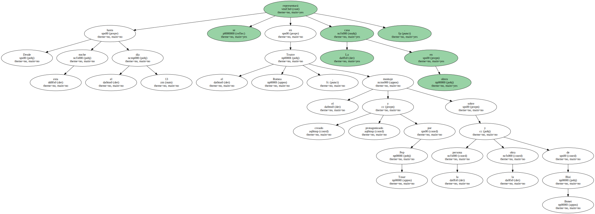
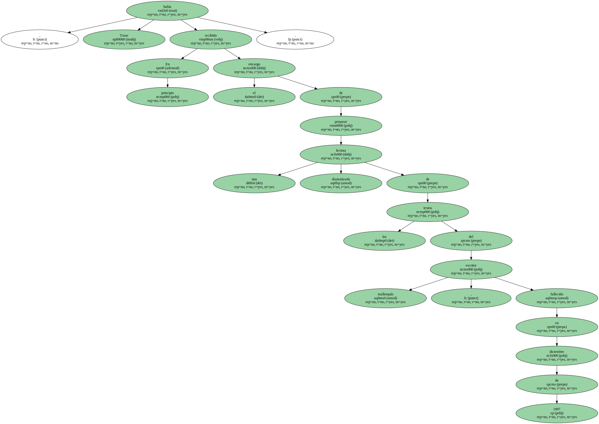
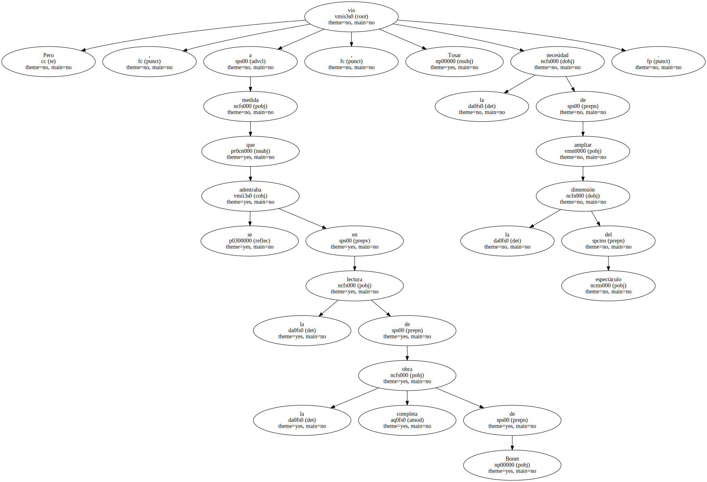
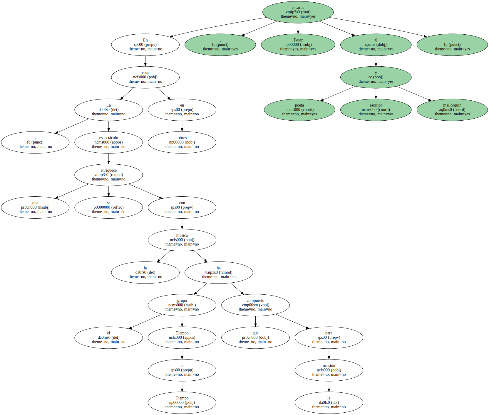
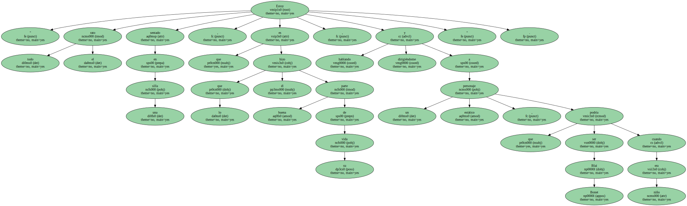
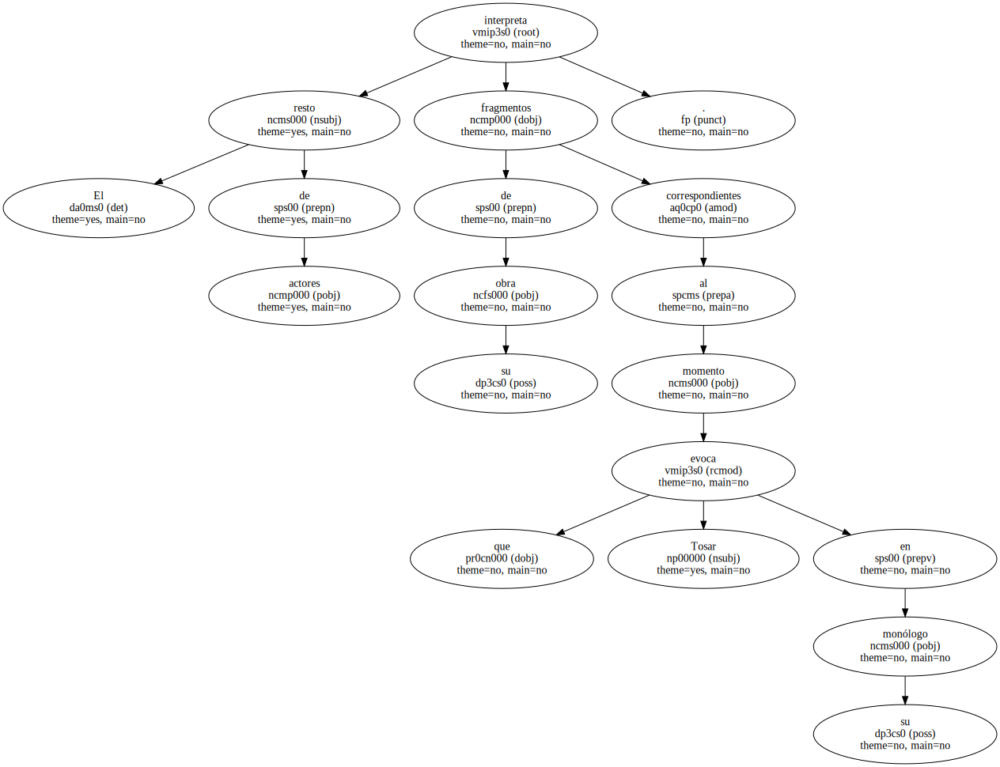
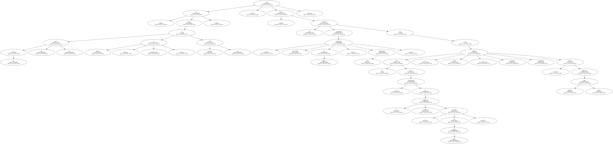
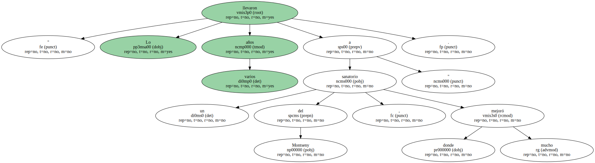
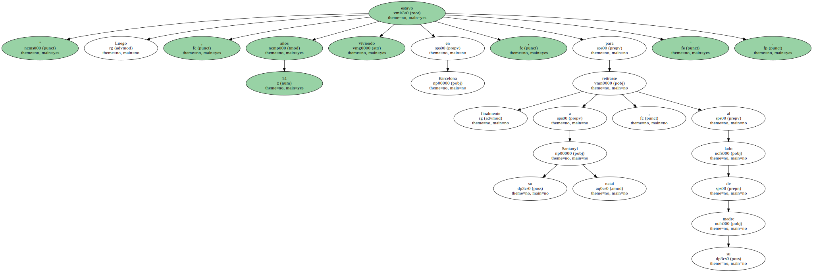
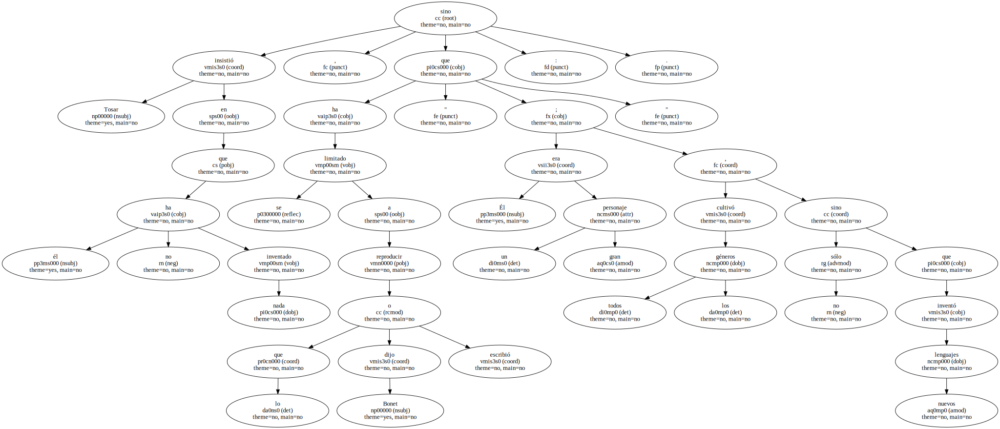

El montaje se representará en el Teatre Romea desde hoy hasta el día 13.

Desde esta noche hasta el día 13 se representará en el Teatre Romea La casa en obres , el montaje creado y protagonizado por Pep Tosar sobre la persona y la obra de Blai Bonet.
En principio , Tosar había recibido el encargo de preparar una lectura dramatizada de los textos del escritor mallorquín , fallecido en diciembre de 1997.
Pero , a medida que se adentraba en la lectura de la obra completa de Bonet , Tosar vio la necesidad de ampliar la dimensión del espectáculo.
" Es un viaje personal por lo que fue su vida y su obra , a base de fragmentos confeccionados por mí sobre textos no literarios de Bonet : entrevistas , artículos y una grabación de vídeo , de cuatro horas de duración , hecha por la Universitat de les Illes Balears " , dijo Tosar el pasado viernes , al presentar su espectáculo , que fue estrenado en el pasado Grec y del que ha dado varias representaciones en tierra balear.

En La casa en obres , espectáculo que se enriquece con la música que el grupo Tiempo al Tiempo ha compuesto para la ocasión , Tosar encarna al poeta y escritor mallorquín.
" Estoy todo el rato sentado en una silla , que es lo que hizo él buena parte de su vida , hablando y dirigiéndome a un personaje estático , que podría ser Blai Bonet cuando era niño ".
El resto de actores interpreta fragmentos de su obra correspondientes al momento que evoca Tosar en su monólogo.
" Es Como si dijera : ' A mí me pasó eso y entonces escribí eso ' " , dijo Tosar , que recordando la irreversible enfermedad de Bonet , una tuberculosis , comentó que si no hubiera sido por el mecenazgo de la burguesía catalana ( avisada por Carles Riba ) , el escritor y pensador mallorquín hubiera fallecido muchos años antes.
" Lo llevaron varios años a un sanatorio del Montseny , donde mejoró mucho ".
" Luego , estuvo 14 años viviendo en Barcelona , para retirarse finalmente a su Santanyí natal , al lado de su madre ".
Tosar insistió en que él no ha inventado nada , sino que se ha limitado a reproducir lo que Bonet dijo o escribió : " Él era un gran personaje ; no sólo cultivó todos los géneros , sino que inventó nuevos lenguajes ".
